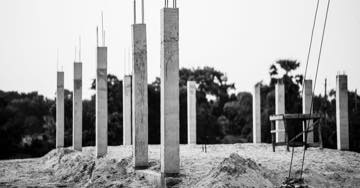

Binanız hangi deprem yönetmeliği döneminde yapıldı? Belgeleri nasıl alırsınız?
Bina yaşı, dayanıklılık hakkında kaba ama anlamlı bir göstergedir. Ruhsat, iskân ve zemin etüdü raporu bilgi edinme yoluyla istenebilir.

"Binam kaç yılında yapıldı?" sorusu, deprem güvenliği hakkında elinizdeki en hızlı göstergedir. Tek başına yeterli değildir; ama hangi kurallara göre inşa edildiğini ve hangi denetimden geçtiğini söyler.
Deprem yönetmeliği kuşakları
| Dönem | Yönetmelik | Not |
|---|---|---|
| 1975 | Afet Bölgelerinde Yapılacak Yapılar Hakkında Yönetmelik | Erken dönem |
| 1998 | Aynı yönetmeliğin kapsamlı revizyonu | Yayım 1997, yaygın adlandırma 1998 |
| 2007 | Deprem Bölgelerinde Yapılacak Binalar Hakkında Yönetmelik | 2018 ile yürürlükten kaldırıldı |
| 2018 | Türkiye Bina Deprem Yönetmeliği (TBDY) | 18.03.2018 tarihli mükerrer Resmî Gazete; yürürlük 01.01.2019 |
TBDY 2018, yalnızca yeni yapılacak binaların tasarımını değil, mevcut binaların deprem etkisi altında değerlendirilmesi ve güçlendirilmesi için gerekli kuralları da belirler. Yani binanız eski olsa da bugünün ölçütleriyle değerlendirilebilir.
Tablodaki eski dönemlerin Resmî Gazete tarihleri ikincil kaynaklardan derlenmiştir ve resmî metinden doğrulanması sürmektedir. Bir davada veya teknik değerlendirmede kullanmadan önce yürürlük tarihlerini resmî kaynaktan teyit edin.
2001 eşiği: yapı denetimi
4708 sayılı Yapı Denetimi Hakkında Kanun 2001'de kabul edilmiş, zorunlu yapı denetimi kademeli olarak yaygınlaştırılmıştır. 2001 öncesi yapılar bu denetimden geçmemiştir.
Bu tarih, sonradan açılacak davalarda da belirleyicidir: yapı denetim kuruluşunun sorumluluğu, ancak denetime tabi yapılar bakımından gündeme gelir. İdare ve yapı denetiminin sorumluluğu.
Binanızın belgelerini nasıl alırsınız?
Bilgi Edinme Hakkı Kanunu kapsamında ilgili idarelerden şu belgeler talep edilebilir:
- Yapı ruhsatı ve yapı kullanma izin belgesi (iskân)
- Zemin etüdü raporu
- Yapı denetim kuruluşu raporları (denetime tabi yapılarda)
- İmar durumu ve plan notları
Bu belgeleri depremden önce toplayın. Hem risk değerlendirmesi için hem de deprem sonrası açılacak davalarda delil niteliğindedirler. Deprem sonrasında bu belgelere ulaşmak çok daha zorlaşır: arşivler zarar görür, kurumlar yoğunlaşır, süreçler uzar.
Bilgi edinme başvurusu nasıl yapılır?
- Kuruma karar verin. Yapı ruhsatı ve iskân genellikle ilgili belediyede; büyükşehirlerde ilçe belediyesinde bulunur. İl müdürlükleri de bazı kayıtları tutar.
- Başvurunuzu yazın. Binanın açık adresi, ada/parsel, bağımsız bölüm bilgisi ve talep ettiğiniz belgeleri tek tek yazın.
- Kanalı seçin. CİMER, kurumun bilgi edinme birimi, e-Devlet veya elden başvuru.
- Kaydını saklayın. Başvuru numarası ve cevap yazısı, sonraki süreçlerde işinize yarar.
Yapım yılına ek olarak bakılacaklar
Aşağıdakiler mühendislik değerlendirmesi değildir; risk tespiti yaptırmak için sebep oluşturan göstergelerdir:
- Zemin katta dükkân için kolon kaldırılmış olması (yumuşak kat)
- Taşıyıcı sistemde tadilat: kolon kesme, taşıyıcı duvar kaldırma
- Ruhsatsız kat ilavesi
- Kolonlarda görünür çatlak, pas payı dökülmesi, donatı görünmesi
- Zeminin alüvyon veya dolgu olması
- Binanın eğim, oturma veya kapı-pencere sıkışması göstermesi
Bu göstergelerden biri veya birkaçı varsa, sıradaki adım nettir: riskli yapı tespiti yaptırmak. Tek malik olarak başvurabilirsiniz; diğer maliklerin onayı gerekmez.
"Yapı Kayıt Belgem var" durumu değiştirir mi?
Hayır. Yapı Kayıt Belgesi binanın depreme dayanıklı olduğunu göstermez ve maliki sorumluluktan kurtarmaz. İmar barışı ve Yapı Kayıt Belgesi.
Bina bilgisi sigortayı da etkiler
Zorunlu deprem sigortasında sigorta bedeli, yapı tarzına (çelik/betonarme karkas veya diğer) ve brüt yüzölçümüne göre hesaplanır. Poliçenizdeki bu iki bilgi hatalıysa, ödeme de hatalı hesaplanır.
Poliçenizi kontrol edin ve teminat açığınızı hesaplayın.
Güçlendirme mi, yıkıp yeniden yapmak mı?
Risk tespiti sonucunda binanın yetersiz olduğu anlaşılırsa iki yol tartışılır. Karar teknik bir konudur ve yalnızca yapı mühendisliği değerlendirmesiyle verilir; ancak maliklerin bilmesi gereken çerçeve şudur:
| Güçlendirme | Yıkıp yeniden yapma | |
|---|---|---|
| Süre | Genellikle daha kısa | Uzun |
| Barınma | Kısmi tahliye gerekebilir | Tam tahliye |
| Sonuç | Mevcut yapı iyileştirilir | Güncel yönetmeliğe göre yeni yapı |
| Karar süreci | Kat malikleri kararı | Arsa payı çoğunluğu ve sözleşme |
Yürürlükteki yönetmelik, yeni yapılar kadar mevcut binaların değerlendirilmesi ve güçlendirilmesi için de kurallar içerir. Yani "eski bina, yapacak bir şey yok" doğru değildir.
Güçlendirme kararı alırken, yapılacak işin esaslı onarım sayılıp sayılmadığını da sorun: Yapı Kayıt Belgesi bulunan yapılarda esaslı onarımın belgenin geçerliliğini etkilediği belirtilmektedir. Ayrıntısı burada.
Kiracıysanız bu bilgiyi isteyin
Bir konutu kiralarken binanın yapım yılını ve belgelerini sormak hakkınızdır. Kiracı, riskli yapı sürecinde de taraftır ve tespit sonucundan etkilenir. Kiracının deprem hakları.
Sormaktan çekinmeyin: binanın yapım yılı, ruhsat durumu ve varsa risk tespit raporu, kira kararınızı vermeden önce bilmeniz gereken üç bilgidir. Bu bilgiyi vermeyen bir kiraya veren, size zaten bir şey söylemiş olur.
Kanuni dayanak
| Mevzuat | Ne diyor |
|---|---|
| Türkiye Bina Deprem Yönetmeliği (TBDY) | 18.03.2018 tarihli resmî gazete (mükerrer), yürürlük 01.01.2019 |
| Deprem Bölgelerinde Yapılacak Binalar Hakkında Yönetmelik (2007) | 2007-2018 arasında yürürlükte kalan deprem yönetmeliği kuşağı. |
| Afet Bölgelerinde Yapılacak Yapılar Hakkında Yönetmelik (1975 ve 1998 dönemleri) | 2007 öncesi yapıların tabi olduğu yönetmelik kuşakları. |
| 4708 sayılı Yapı Denetimi Hakkında Kanun (2001) | Zorunlu yapı denetimini başlatan kanun; 2001 öncesi yapılar bu denetimden geçmemiştir. |
| 4982 sayılı Bilgi Edinme Hakkı Kanunu | Binanıza ait ruhsat, proje ve denetim belgelerini idareden isteme hakkını verir. |
Sık sorulanlar
Hangi deprem yönetmeliği şu an yürürlükte?
Türkiye Bina Deprem Yönetmeliği (TBDY), 18.03.2018 tarihli mükerrer Resmî Gazete'de yayımlanmış ve 01.01.2019'da yürürlüğe girmiştir. 2007 tarihli yönetmeliği yürürlükten kaldırmıştır.
2001 tarihi neden önemli?
4708 sayılı Yapı Denetimi Hakkında Kanun 2001'de kabul edilmiş ve zorunlu yapı denetimi kademeli olarak yaygınlaştırılmıştır. 2001 öncesi yapılar bu denetimden geçmemiştir.
Binamın ruhsat ve iskân belgesini nasıl alırım?
Bilgi Edinme Hakkı Kanunu kapsamında ilgili belediyeden veya il müdürlüğünden talep edebilirsiniz. Yapı ruhsatı, yapı kullanma izin belgesi, zemin etüdü raporu ve yapı denetim raporları bu kapsamda istenebilecek belgelerdir.
Bina yaşı tek başına güvenlik göstergesi midir?
Hayır. Yapım yılı, hangi yönetmelik kuşağına denk geldiğini gösteren kaba bir göstergedir. Güvenlik değerlendirmesi ancak lisanslı kuruluşça yapılacak teknik inceleme ile mümkündür.
Bu konuyla ilgili araç
Hak taramaDurumunuza uyan hakları dayanağıyla görün.Teminat açığı hesabıBinanız için sigorta korumasını hesaplayın.İlgili rehberler
 Deprem öncesi yapı güvenliği
Riskli yapı tespiti nasıl yaptırılır? Komşularınızın onayı gerekmiyor
Riskli yapı tespiti için diğer maliklerin onayı gerekmez. Tek bir kat maliki, masrafı kendisine ait olmak üzere tüm binanın tespitini yaptırabilir.
Deprem öncesi yapı güvenliği
Riskli yapı tespiti nasıl yaptırılır? Komşularınızın onayı gerekmiyor
Riskli yapı tespiti için diğer maliklerin onayı gerekmez. Tek bir kat maliki, masrafı kendisine ait olmak üzere tüm binanın tespitini yaptırabilir.
 Deprem öncesi yapı güvenliği
İmar barışı ve Yapı Kayıt Belgesi: binanız yasallaştı ama güvenli olmadı
Yapı Kayıt Belgesi, binanın depreme dayanıklı olduğunu göstermez ve maliki sorumluluktan kurtarmaz. Sorumluluk açıkça malike bırakılmıştır.
Deprem öncesi yapı güvenliği
İmar barışı ve Yapı Kayıt Belgesi: binanız yasallaştı ama güvenli olmadı
Yapı Kayıt Belgesi, binanın depreme dayanıklı olduğunu göstermez ve maliki sorumluluktan kurtarmaz. Sorumluluk açıkça malike bırakılmıştır.

Dava ve uyuşmazlık Müteahhidin sorumluluğu: ağır kusur varsa zamanaşımı 20 yıl Binanın depremde yıkılması hukuken ayıplı ifadır. Taşınmaz yapılarda zamanaşımı beş yıl, yüklenicinin ağır kusuru varsa yirmi yıldır. Dava ve uyuşmazlık
Belediyeye ve yapı denetime dava: deprem her zaman mücbir sebep değildir
Deprem kuşağındaki bölgelerde depremin mücbir sebep sayılamayacağı kabul ediliyor. Bu, idarenin 'elimden bir şey gelmezdi' savunmasını kıran ilkedir.
Dava ve uyuşmazlık
Belediyeye ve yapı denetime dava: deprem her zaman mücbir sebep değildir
Deprem kuşağındaki bölgelerde depremin mücbir sebep sayılamayacağı kabul ediliyor. Bu, idarenin 'elimden bir şey gelmezdi' savunmasını kıran ilkedir.